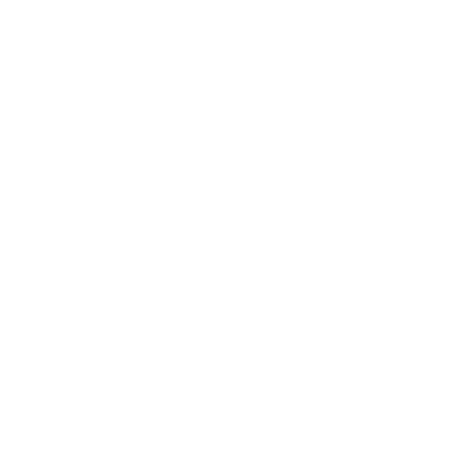
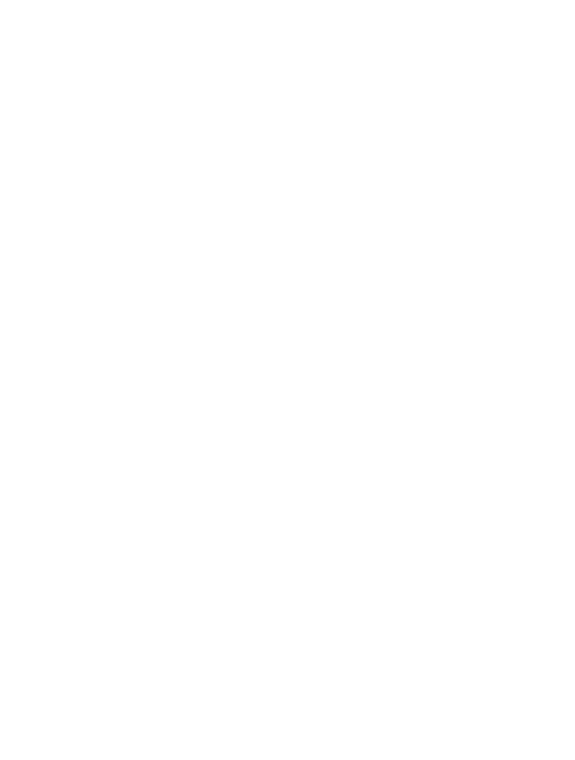
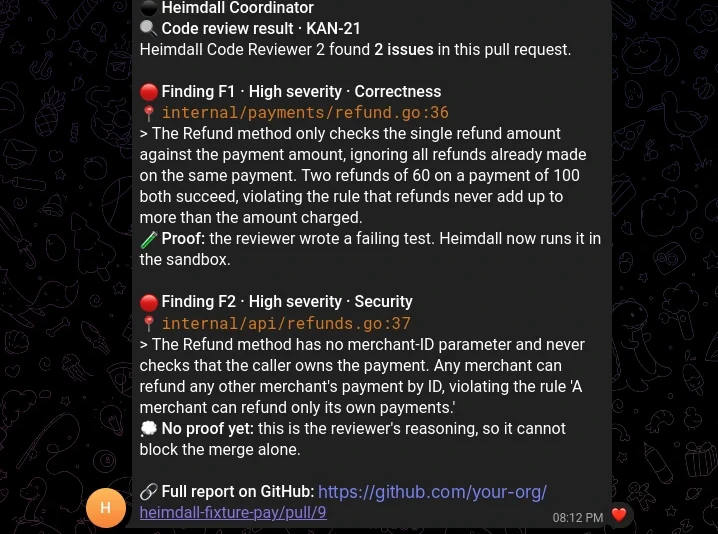
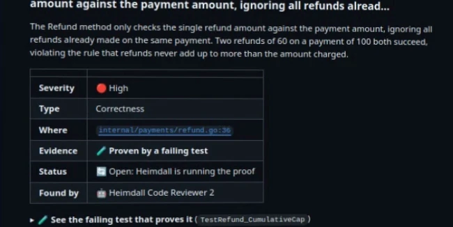

Proof, not opinion
A model can suggest a bug. Only a test can block the merge.

Heimdall writes a test for each AI review finding and runs it in a sealed sandbox. If the test fails on your pull request and passes on the fix, the merge stops.
How it works
Integrations
It reads your code and tickets, runs in your CI, uses the model you pick and talks in your team chat.
Team chat
 Slack
Slack Discord
Discord Telegram
Telegram Mattermost
Mattermost Microsoft Teams
Microsoft TeamsCode and tickets

 GitHub
GitHub GitHub Actions
GitHub Actions Jira
JiraModels


OpenRouter

OllamaTeam chat
Heimdall posts each finding to your team room. A proven finding says so. A finding without proof says that it cannot block the merge. A person answers with one command.
heimdall uphold F1Keep the blockheimdall dismiss F1 reasonRemove it, with a reasonReal captures from a live run.


Set up
Heimdall starts in report-only mode. It blocks nothing until you turn on enforcement.
You need admin access to the repository, the gh CLI, Go 1.27 and a model key.
Set up Heimdall on OWNER/REPO in GitHub Action mode. Follow https://github.com/prathameshk421/Heimdall/blob/main/skills/heimdall-setup/SKILL.mdPaste it into your coding agent. The agent shows the plan first, never reads your key and opens a pull request for you to merge.
# Build the CLI
$ git clone https://github.com/prathameshk421/Heimdall.git && cd Heimdall
$ CGO_ENABLED=0 go build -o heimdall ./cmd/heimdall
# See the plan, then apply it
$ ./heimdall action init -repo OWNER/REPO -dir CHECKOUT
$ ./heimdall action init -repo OWNER/REPO -dir CHECKOUT -apply -model-key-stdin < KEY_FILEThe command writes three workflows and a policy file. You merge them like any other change.
Why Heimdall
A model can suggest a bug. Only a test can block the merge.
Code under test has no network and no extra privileges. If the sandbox cannot start, the run stops.
One binary in your CI, or a small VM for the whole team.
A cost check runs before each model call.
Heimdall reads each test change. It flags 9 types of cheats in 5 language families.
Only a person who is not the author can approve, and only the latest commit.
Open by design
Use any OpenAI-compatible API. A local model needs no key.
OpenRouterOllamaDeepSeekvLLMRun it in your GitHub Actions, or on your own VM. Your code stays with you. No inbound ports.
ActionsLinux VMMIT licenseKeep the bots you have. Heimdall applies the same proof rule to their comments.

 Copilot
Copilot
 BugbotGreptile
BugbotGreptile